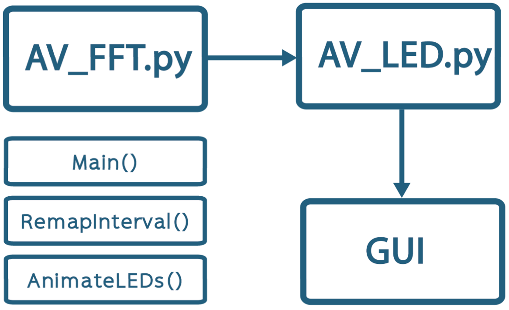

Final SoftDes Project
Our code is broken up into three main parts. The FFT, or Fast Fourier Transform, brings the sound file from a time domain to a frequency domain, allowing it to be analyzed mathematically and exported as a sequence of values corresponding to how many LEDs should be lit up. From there it moves into the visualization program that inputs those values and maps them to individual LEDs for exporting to the hardware. The user is able to control which song is played through the GUI (Graphical User Interface) hosted on the Pi.
AV_FFT: takes a .wav file, performs FFT analysis on the audio data, and creates a .csv file of frequency data. The user may change the number of frequency buckets and the input song. Optional bar graph representations of the FFT data can also be created. This section of the code was adapted from Xander Sheppard's audio visualizer, although instead of creating a bar graph visualizer, the code has been modified and augmented for the needs of this project.
AV_LED: uses the .csv file to assign colors to LEDs in an array and lights up the LEDs. Although this is configured to display the data on our specific helical structure, with some creativity many other configurations can also be made. The Rpiws281x library is crucial for the Raspberry Pi to control the LEDs. The default color of the LEDs is white, and branches of the helix change color corresponding to the amplitude of the frequency at each frame. The positions of colored LED pixels each frame are stored in a numpy array where 0 corresponds to a white pixel and 1 corresponds to a colored pixel. The index of an element in the array corresponds to the index of an LED pixel in the strip. The 7 colors are stored in a list, and the color of a colored pixel is determined by which branch it falls on on the helix. The colors can be easily adjusted, and more can be added easily to the list.
GUI: page.py utlizes Flask to make a GUI. The GUI consists of a pull down menu where one can select a song from the list of preloaded songs and a big red Start! button. When a song is selected and the button is pressed, the sculpture lights up and the music starts to play.
To do this, AV_LED and playsong are imported and run when the button is pressed. The file locations of the audio files and the FFT data of each song is stored in a dictionary that can be augmented to include more songs